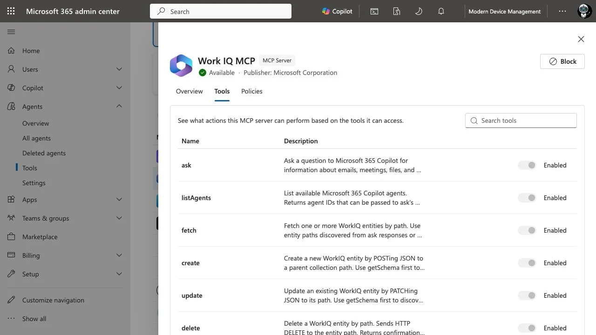
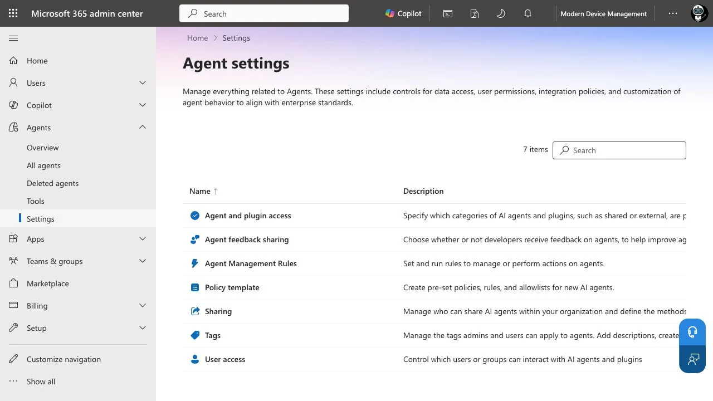
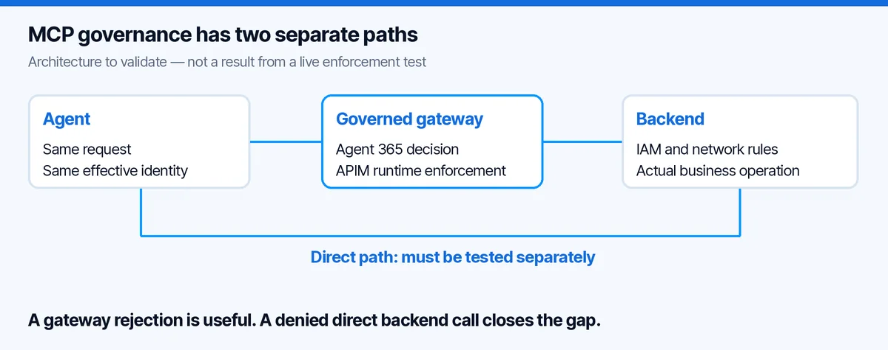
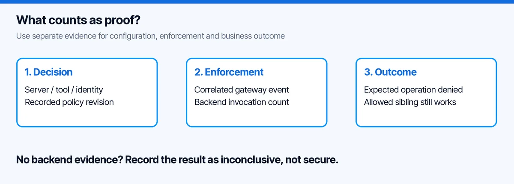

Agent 365 MCP Governance: Prove the Block, Not the Badge
A blocked tool in an admin portal looks reassuring. My next question is less comfortable: can the same agent still call the underlying service directly?
That is the practical question behind Agent 365 MCP governance and the new Azure API Management integration. Not whether an MCP server appears in a list. Whether the control stops the action on the route the agent actually uses.
I opened my Modern Device Management tenant to check the current experience. There is useful functionality here, but also a clear difference between a visible tool, an editable policy and proven runtime enforcement. This guide separates those three things and gives you an acceptance plan for your own pilot.
What I could actually see in the tenant
Under Microsoft 365 admin center â Agents â Tools, the registry exposes MCP servers and their tool details. In the Work IQ entry, I could inspect actions such as ask, fetch, create, update and delete.
That is already a better conversation than âour agent has access to Microsoft 365.â A reader and a writer are not the same capability. Nor is a tool description an authorization policy.

Captured on 12 October 2026. This is the Work IQ tool inventory, not an APIM integration success screen. The individual switches were disabled in this session; I did not change them.
The Agents â Settings page in this tenant did not show the Gateways entry described in Microsoftâs setup guide. I will not guess whether that is a rollout, entitlement or configuration issue. It means I cannot honestly present this tenant as a completed gateway onboarding demo.

The missing entry is a concrete readiness gap for this walkthrough, not proof that the feature is unavailable in every tenant.
This matters for the rest of the article: the following integration steps are a documented setup path and my proposed validation design. They are not a claim that I enabled the connection or ran blocking tests here.
What Agent 365 MCP Governance Adds to API Management
Microsoftâs 9 October announcement connects Agent 365âs governance decisions with enforcement at supported APIM gateways. APIM v2 supports server-level controls; the preview AI Gateway tier adds finer tool controls, activity observability and threat-protection capabilities. This is a public-preview integration, not a universal capability of every APIM tier. Microsoftâs integration announcement.
My architectural reading is simple: the control needs an enforcement point in the request path. I would therefore put two routes on the whiteboard before touching any toggle.

The first route is the intended one: agent, gateway, backend. The second is the one people forget: agent, backend. A gateway cannot reject a request it never receives. Whether that second route exists is an environment-specific question, not something a catalog badge answers.
This is not an argument against the integration. It is the acceptance criterion that makes the integration useful.
I would not onboard the entire tool estate as the first pilot. Pick one low-risk service and separate two operations:
get_ticket: reads a synthetic ticket.close_ticket: changes only that synthetic ticketâs state.
Those names are an example contract, not existing Work IQ operations. Keep the data fictional and give the test a dedicated identity. Write down the MCP endpoint, backend endpoint, expected audience and permitted operation. Keep credentials out of the worksheet.
My success condition would be: reading still works, closing is rejected for the restricted identity, and no equivalent direct route lets that identity close the ticket.
This forces an important design choice. If your MCP server exposes one broad execute tool that accepts arbitrary commands, a tool-level allowlist may be less useful than it looks. The permission boundary is the operation the backend actually authorizes, not how friendly the toolâs name sounds.
The onboarding sequence I would use
1. Check the product path before requesting consent
Confirm the gateway tier, registered MCP server, administrative role and the presence of the documented Gateways setting. Microsoftâs flow uses a Global Administrator to grant tenant-wide consent, then discovers servers registered in the connected gateway. It does not discover every MCP server on the internet. Manage Tools Gateway.
In my tenant, I stopped at the missing entry. I did not try random admin URLs, grant unrelated permissions or provision a different service just to make the screenshot look complete.
For a real pilot, I would capture consent approval in the change record: who approved it, which tenant, which application, which permissions and why. âSomeone clicked Accept during the demoâ is not an operating model.
2. Match the discovered object to the actual endpoint
Once the connection is available and approved, inspect the discovered server in Agents â Tools. Compare its identity and endpoint with the gateway configuration and the agentâs actual connection settings.
Do not match only by display name. âHelpdesk MCPâ can exist in development, test and production at the same time. The test record should name the environment unambiguously.
I would also record the source of the entry. The Work IQ screen above proves the general tool-inspection experience. It does not prove that my own gateway-managed server was discovered.
Where supported, the Tools tab allows individual operations to be controlled. Microsoftâs documentation explicitly limits granular control to supported server types and rollout availability. If discovery is unsupported, you may only have a server-level decision. Manage MCP servers and individual tools.
If I cannot control the write operation separately, I would either split the service contract or accept that blocking the whole server also removes its read capability. I would not call that âleast privilegeâ without explaining the trade-off.
4. Apply the decision only in the approved pilot
Make one change at a time. Record its timestamp, server or tool identifier, actor and policy revision. Then invoke the exact operation through the expected route with the test identity.
The key question is not simply âdid the client show an error?â An expired credential can also create an error. I want evidence that the intended control caused the rejection.
Six tests before I would call it governed
This is my proposed test matrix. It deliberately includes a positive control and a bypass check. No row below is a measured result from this tenant.
| Test | Request | What I would require as evidence |
|---|---|---|
| Allowed read | Read the synthetic ticket through the gateway | Expected response and a matching gateway event |
| Restricted write | Close the same ticket through the gateway | Policy rejection, with no corresponding backend mutation |
| Sibling tool | Call the allowed read after restricting the write | Read still works; the control is not an accidental whole-service outage |
| Direct backend route | Attempt the equivalent operation using the same effective permissions | Backend/network authorization prevents the unintended route, or the gap is explicitly recorded |
| Different identity | Repeat with the approved operator identity | The result matches the intended identity policy, not a shared overprivileged credential |
| Change reversal | Restore the pilot setting through the approved change process | Intended capability returns and the audit trail remains understandable |
The direct-route test deserves care. Do not broaden an identityâs rights to make the test possible. If no equivalent credential or route exists, record that fact and its reason. Do not replace it with an artificial bypass that your architecture never permitted.

For each test I would keep a correlation marker, UTC time, effective identity, gateway result and backend result. Never put bearer tokens, subscription keys or full business payloads into the evidence file.
Before the call and after the call are different protections
The announced threat-protection capability can evaluate a tool request before invocation and its result afterwards. A pre-invocation block can prevent execution; post-invocation screening can stop an unsafe result reaching the agent. Microsoftâs integration announcement.
My practical consequence: I would never use result filtering as my only control for an irreversible write. If a tool has already sent an email, deleting text from its response does not unsend it. The same reasoning applies to closing a ticket or changing a permission.
For read tools, output inspection has a different value: it can reduce what flows back into the agent. For write tools, I still want authorization and any required approval before the operation. These are complementary controls, not interchangeable labels.
A small incident record beats a large dashboard
Imagine the helpdesk team reports that the agent closed a ticket it should only have summarized. My first investigation would be a short chain of questions:
- Which operation changed the ticket, and under which identity?
- Did that request pass through the governed gateway?
- Which policy revision applied at that time?
- Was the decision a pre-call block, a post-call result block or no block?
- Did the backend authorize a broader action than the MCP tool contract suggested?
That record is more actionable than a screenshot showing âBlockedâ today. Todayâs setting does not establish yesterdayâs execution path.
I would give the AI administrator ownership of the governance decision, the platform team ownership of gateway routing and the service owner ownership of backend authorization. The incident process needs all three. Otherwise each team can honestly report that its own part looks fine while the action still happened.
Agent 365 MCP Governance: Common Questions
Does an Agent 365 registry entry enforce access by itself?
No. Inventory shows an object; enforcement must happen on the request path. For Agent 365 MCP governance with API Management, confirm the supported integration, the policy decision and the resulting gateway behaviour separately.
Registering an agent with Python and Entra makes its identity and registry entry visible. It does not prove that every tool request passes through the gateway. The six acceptance tests above address that second question.
Where does API Management fit?
My API Management MCP control-plane guide explains the gateway boundary. Test the direct backend path too: a blocked gateway route is not sufficient if the same action remains available elsewhere.
My decision sheet
| Situation | My next step |
|---|---|
| No Gateways setting, like this tenant | Resolve availability and prerequisites; do not claim onboarding is complete |
| Server visible, tool toggles unavailable | Confirm supported control granularity before designing tool-specific restrictions |
| Gateway rejects, backend still accepts a direct equivalent | Fix the backend/network authorization boundary |
| Client fails, no correlated enforcement evidence | Treat the test as inconclusive |
| Restricted write fails and allowed read still succeeds | Good pilot signal; repeat with the real identity and representative workload |
For the registration side of the story, my Foundry Python agent walkthrough is a useful starting point. Registration tells you what the agent is. This validation tells you what it can actually do.
The new integration is interesting because it can bring governance closer to execution. My bar for calling an agent governed remains straightforward: show me the request that was stopped, and show me that the backend action did not happen.